Inhalt Index DeskTop Bronstein

 Arithmetik Elementare Rechenregeln Potenzen, Wurzeln, Logarithmen
Arithmetik Elementare Rechenregeln Potenzen, Wurzeln, Logarithmen


In Übereinstimmung mit der folgenden Tabelle ,,Definition der Potenzen`` wird als n-te Wurzel aus a die positive Zahl
| 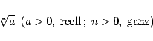 | (1.20a) |
bezeichnet. Man spricht bei der Berechnung dieser Zahl vom Radizieren oder Wurzelziehen und nennt a den Radikanden und n den Wurzelexponenten. Die 2. und die 3. Wurzel werden auch Quadratwurzel bzw. Kubikwurzel genannt.
| Basis a | Exponent x | Potenz ax |
| beliebig reell, 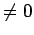 | 0 | 1 |
| 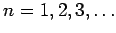 | 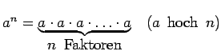 | |
| 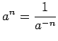 | ||
| positiv reell | rational: (p, q ganz, q>0) |
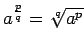 (q-te Wurzel aus a hoch p) |
| irrational: 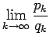 |
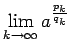 |
|
| 0 | positiv | 0 |
| 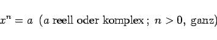 | (1.20b) |
wird häufig auch die Schreibweise 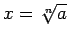 verwendet, aber dann repräsentiert diese Darstellung n Werte 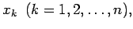 die gemäß (1.143b) zu berechnen sind.
| Beispiel |
|
Die Gleichung x3 = -8 hat die drei Wurzeln 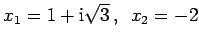 und 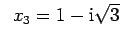. |